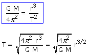
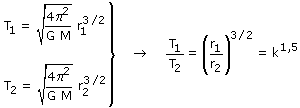

Utilizando la relación entre período y radio orbital:

Aplicamos la expresión a los planetas con mayor radio (1) y menor radio (2) orbital

Resulta entonces que, si el radio es k veces mayor el período será k1,5 veces mayor